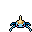
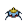

Pokédex / #283

Surskit #283
BugWater
They usually live on ponds, but after an evening shower, they may appear on puddles in towns.
Generation 3 · Hoenn

Stats
| Attack | 30 | |
|---|---|---|
| Defense | 32 | |
| Sp. Atk | 50 | |
| Sp. Def | 52 |
In the wild
| Wild level | 20–30 |
|---|---|
| HP | 40 |
| Experience | 5 |
| Egg groups | Bug, Water 1 |
Evolution
- Evolves into Masquerain at level 35.
Moves
| Level | Move | Type | Category | Power | Energy | Cooldown | Effect | |
|---|---|---|---|---|---|---|---|---|
| 1 | Tackle | Normal | Physical | 15 | 15 | 1s | Tackle is one of the most common and basic moves a Pokemon learns. It deals damage with no additional effects. | |
| 5 | Bubble | Water | Special | 10 | 40 | 3s | Bubble deals damage and has a 10% chance of lowering the target's Speed by one stage. | |
| 10 | Quick Attack | Normal | Physical | 40 | 40 | 6s | Quick Attack deals damage and has no secondary effect. | |
| 15 | Bubblebeam | Water | Special | 65 | 70 | 16s | Bubblebeam deals damage and has a 10% chance of lowering the target's Speed by one stage. | |
| 20 | Aqua Jet | Water | Physical | 40 | 40 | 6s | The user lunges at the target at a speed that makes it almost invisible. | |
| 25 | Gust | Flying | Special | 40 | 40 | 9s | Gust deals damage and has no secondary effect. | |
| 30 | Agility | Normal | Status | – | 80 | 20s | Agility raises the user's Speed by two stages. |
Field abilities
Flash
Special abilities
Swift Swim
Egg moves
Bug BiteEndureFell StingerHydro PumpLungeMind ReaderMud ShotPsybeamSignal Beam
Technical machines
BlizzardDouble TeamIce BeamProtectRain DanceRestShadow BallSolar BeamSubstituteToxic
Drops
| Item | Amount | Chance | |
|---|---|---|---|
| water gem | 1–3 | 80% | |
| pot of moss mug | 1 | 11.4% | |
| water pendant | 1 | 10% | |
| pot of water | 1 | 6.4% | |
| sample of sand wasp honey | 1 | 4% | |
 | surskit doll | 1 | 0.1% |
| Splash Plate | 1 | 0.001% | |
| Insect Plate | 1 | 0.001% | |
| TM 11 | 1 | 0.001% |